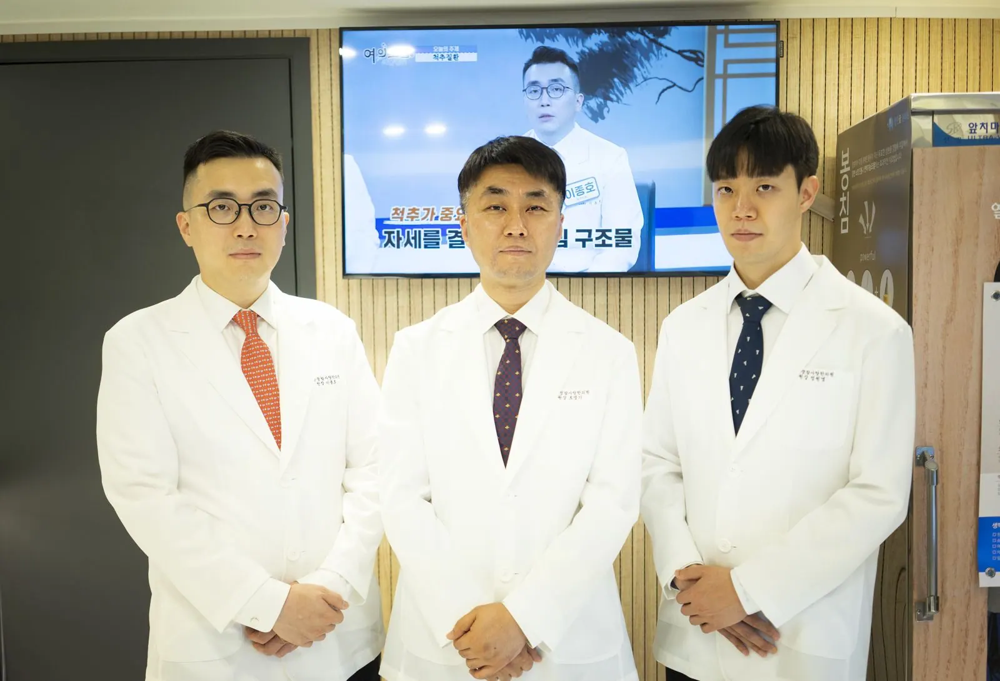
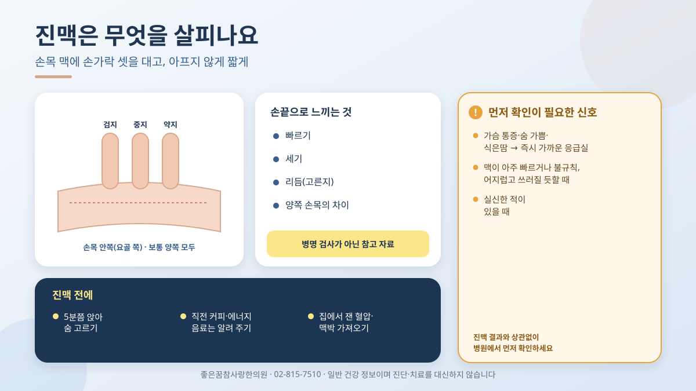

이종호 한의사 감수좋은꿈참사랑한의원 대표원장 (한의사 면허번호 19769)발행 2026-11-23 · 수정 2026-11-25
이 글의 차례
진맥은 손목 안쪽의 맥박에 손가락 세 개를 대고 빠르기, 세기, 리듬 같은 특징을 손끝으로 느껴 몸의 전체적인 경향을 살피는 한의학의 진찰 방법입니다. 아프지 않고 시간도 길지 않습니다. 병명을 정하는 검사라기보다 문진에서 들은 이야기와 맞춰 보는 참고 자료입니다.
왜 맥을 살피나요
- 같은 피로나 두근거림이라도 맥이 빠른지, 약한지, 고르지 않은지에 따라 살펴볼 방향이 달라질 수 있다고 한의학에서는 봅니다.
- 양쪽 손목을 비교하면 몸의 균형을 가늠하는 단서를 얻을 수 있다고 봅니다.
- 진료가 이어질 때 맥의 변화를 함께 보면 몸 상태의 흐름을 이야기하기 쉬워집니다.
- 다만 숫자로 재는 검사가 아니라 손끝으로 느끼는 부분이 있어 한계도 있습니다.

자주 하는 오해
- 맥만 짚으면 병명을 알 수 있다고 여기기 쉽지만, 진맥은 문진과 다른 진찰을 함께 놓고 보는 참고 자료입니다.
- 통증으로 왔으니 맥은 상관없다고 생각하기 쉽지만, 좋은꿈참사랑한의원에서는 통증으로 오신 분께도 진맥을 짚습니다.
- 스마트워치 심박수가 정상이면 진맥이 필요 없다고 여기기 쉽지만, 진맥은 빠르기뿐 아니라 맥의 힘과 깊이, 고른 정도를 함께 느껴 봅니다.
- 한 번 짚은 맥이 늘 같다고 생각하기 쉽지만, 잠과 식사, 긴장에 따라 그날그날 달라질 수 있어 매번 다시 짚습니다.
예를 들면 이런 경우입니다
- 예를 들어 야근이 이어져 쉽게 지치는 직장인이라면, 맥과 함께 최근 몇 주의 잠든 시각과 식사 시간을 여쭤 생활 리듬을 같이 살핍니다.
- 예를 들어 시험을 앞두고 가슴이 자주 두근거린다는 수험생이라면, 두근거림이 생기는 시간대와 카페인 섭취를 먼저 여쭌 뒤 맥을 봅니다.
- 예를 들어 혈압약을 드시는 어르신이라면, 약 이름과 오늘 드신 시각을 먼저 확인하고 그 점을 감안해서 맥을 짚습니다.

먼저 이렇게 여쭙니다
- 쉽게 피곤하고 몸이 무겁다고 느끼나요?
- 가슴이 두근거리는 때가 있나요? 언제, 어떤 상황에서인가요?
- 손발이 차거나 열감이 있나요?
- 오시기 직전에 급하게 걸었거나 커피를 드셨나요?
- 심장 질환이 있거나 혈압약을 드시나요?
일상에서 먼저 해 볼 수 있는 것
- 진료 전 5분 정도 앉아 숨을 고르기
- 직전에 마신 커피나 에너지 음료가 있으면 알려 주기
- 두근거림이 있다면 그 시간과 상황을 휴대폰에 메모하기
- 집에서 혈압계로 잰 맥박과 혈압이 있다면 함께 가져오기

한의원에서 함께 살필 수 있는 경우
- 쉽게 피곤하고 몸이 무겁다고 느낄 때 평소 생활 리듬과 함께 여쭙니다.
- 가슴이 자주 두근거리는 느낌이 있을 때 시간대와 상황을 함께 살핍니다.
- 몸이 차고 손발이 시린 느낌이 있을 때 온기와 순환 상태를 함께 여쭙니다.
진맥은 손목의 요골 쪽에 검지, 중지, 약지를 나란히 대고 눌러 가며 맥박을 느끼는 방식으로 하며, 보통 양쪽을 모두 봅니다. 좋은꿈참사랑한의원에서는 먼저 불편한 점을 충분히 듣고, 진맥을 기본으로 하고 필요하다고 판단될 때 설진·복진을 함께 참고한 뒤 침이나 한약 상담 등 상태에 맞는 방법을 정합니다.
첫 방문에는 접수 뒤 문진표를 쓰며 잠시 앉아 숨을 고르시고, 진료실에서 불편한 점과 함께 잠, 소화, 배변, 몸의 온기, 요즘 마음의 부담을 먼저 여쭙습니다. 이어서 손목을 책상 위에 편하게 올려 두시면 양쪽 맥을 차례로 짚습니다.
필요하다고 판단되면 설진·복진이나 초음파, 인바디 770 같은 장비로 확인을 더하고, 가져오신 검진 결과와 함께 지금 상태와 치료 방향을 설명해 드립니다. 다시 오시면 지난번 맥과 비교하며 이어서 살핍니다.
진맥과 숫자로 재는 검사는 어떻게 함께 보나요
- 혈압계나 스마트워치는 맥박 수를 숫자로 보여 주고, 진맥은 손끝으로 맥의 힘과 깊이, 고른 정도를 느껴 봅니다. 서로 다른 정보라 함께 놓고 봅니다.
- 건강검진의 혈압, 심전도, 혈액 검사 결과가 있으면 진맥과 문진에서 들은 이야기와 맞춰 봅니다.
- 필요하다고 판단되면 원내의 혈액 검사기나 당화혈색소 검사기, 인바디 770으로 확인을 더하기도 합니다.
- 맥에서 평소와 다른 점이 느껴지고 증상도 이어진다면, 내과 등 다른 진료를 먼저 권하기도 합니다.

스스로 점검해 보세요
- 최근 2주 넘게 쉬어도 피로가 풀리지 않는다
- 가만히 있을 때도 가슴이 두근거리는 날이 있다
- 손발이 차거나 반대로 화끈거리는 느낌이 자주 든다
- 잠들기 어렵거나 자주 깨는 날이 일주일에 여러 번이다
- 식사 뒤 더부룩함이나 배변 변화가 이어진다
- 혈압약, 심장약, 갑상선 약처럼 맥에 영향을 줄 수 있는 약을 먹는다
해당하는 항목이 있으면 진맥 전에 말씀해 주세요. 두근거림이 몇 주째 이어지거나 점점 잦아진다면 내과나 심장 진료로 먼저 확인받아 보시길 권합니다.
이렇게 기록해 오시면 상담이 쉬워집니다
- 두근거림이나 어지럼이 있었던 날짜와 시간, 그때 하던 일
- 집에서 잰 혈압과 맥박
- 커피와 에너지 음료를 마시는 양과 시간
- 복용 중인 혈압약·심장약
- 최근 2~3주의 잠든 시각과 일어난 시각, 낮에 졸린 정도
- 갑상선 검사처럼 최근에 받은 혈액 검사 결과(있다면)

이런 증상은 먼저 확인이 필요합니다
- 가슴 통증, 숨 가쁨, 식은땀이 함께 있는 경우(즉시 응급실)
- 맥이 아주 빠르거나 불규칙하면서 어지럽거나 쓰러질 것 같은 경우
- 실신한 적이 있는 경우
이런 경우에는 진맥 결과와 상관없이 병원에서 먼저 확인받으세요. 복용 중인 약은 처방한 의사와 상의 없이 줄이거나 끊지 않습니다.
관련 글
- 맥진은 어떻게 하고 손목에서 무엇을 살피나요?
- 맥을 짚기 전에 운동이나 카페인은 어떻게 하면 되나요?
- 어르신이 처음 진맥을 받으실 때 무엇을 보고 어떤 것을 여쭙나요?

여쭙는 것
- 쉽게 피곤하고 몸이 무겁다고 느끼나요?
- 가슴이 두근거리는 때가 있나요? 언제, 어떤 상황에서인가요?
- 손발이 차거나 열감이 있나요?
생활에서 해 볼 것
- 진료 전 5분 정도 앉아 숨을 고르기
- 직전에 마신 커피나 에너지 음료가 있으면 알려 주기
- 두근거림이 있다면 그 시간과 상황을 휴대폰에 메모하기
한의원에서 함께 살필 것
- 쉽게 피곤하고 몸이 무겁다고 느낄 때 평소 생활 리듬과 함께 여쭙니다.
- 가슴이 자주 두근거리는 느낌이 있을 때 시간대와 상황을 함께 살핍니다.
- 몸이 차고 손발이 시린 느낌이 있을 때 온기와 순환 상태를 함께 여쭙니다.
먼저 확인이 필요한 신호
- 가슴 통증, 숨 가쁨, 식은땀이 함께 있는 경우(즉시 응급실)
- 맥이 아주 빠르거나 불규칙하면서 어지럽거나 쓰러질 것 같은 경우
- 실신한 적이 있는 경우
한눈에 보는 표
| 구분 | 핵심 |
|---|---|
| 여쭙는 것 | 쉽게 피곤하고 몸이 무겁다고 느끼나요? 가슴이 두근거리는 때가 있나요? 언제, 어떤 상황에서인가요? |
| 생활에서 해 볼 것 | 진료 전 5분 정도 앉아 숨을 고르기 직전에 마신 커피나 에너지 음료가 있으면 알려 주기 |
| 한의원에서 함께 살필 것 | 쉽게 피곤하고 몸이 무겁다고 느낄 때 평소 생활 리듬과 함께 여쭙니다. 가슴이 자주 두근거리는 느낌이 있을 때 시간대와 상황을 함께 살핍니다. |
| 먼저 확인이 필요한 신호 | 가슴 통증, 숨 가쁨, 식은땀이 함께 있는 경우(즉시 응급실) 맥이 아주 빠르거나 불규칙하면서 어지럽거나 쓰러질 것 같은 경우 |
자주 묻는 질문
진맥으로 병명을 알 수 있나요?
병명을 진단하는 방법이라기보다 몸의 전체 경향을 가늠하는 참고 자료입니다.
진맥은 아프거나 오래 걸리나요?
아프지 않고 시간도 길지 않습니다.
양쪽 손목을 다 보나요?
보통 양쪽을 모두 보며, 필요하다고 판단될 때 한쪽을 더 살피기도 합니다.
좋은꿈참사랑한의원은 재진 때 지난번 이야기부터 이어서 여쭙니다. 진료시간과 예약은 오시는 길에서 확인하세요.
어디서 상담받을 수 있나요?
좋은꿈참사랑한의원은 서울 동작구 만양로2길 2 신성빌딩 3층·5층(서울 동작구 상도동, 7호선 상도역 3번 출구 근처)에 있습니다. 한의사 3명(이종호 대표원장, 조영기 수석진료원장, 정원영 진료원장)이 진료합니다. 진료시간은 평일 09:30~20:00(점심 13:00~14:00), 토·일·공휴일 09:30~15:00이며, 방문 전 전화로 확인을 권합니다. 예약은 네이버 예약, 카카오톡 상담, 전화 02-815-7510로 받습니다.
이 글은 일반적인 건강 정보이며 개인의 진단이나 치료를 대신하지 않습니다. 증상이 있거나 복용 중인 약이 있다면 진료를 통해 확인하세요. 치료 효과는 개인마다 다를 수 있습니다.
작성 기준: 일반적으로 알려져 있는 건강 정보를 참고해 정리했습니다(대표원장 감수). 증상 기록은 1~2주 동안 하루 1회, 비슷한 시간에 적어 오시면 지난 상태와 비교하기 쉽습니다.